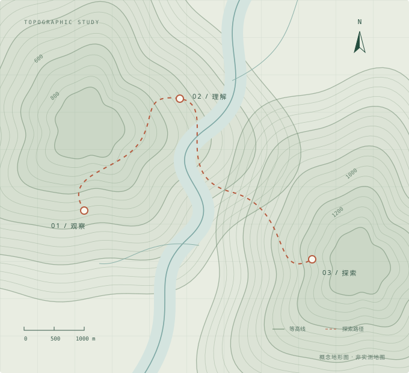

THE GEOGRAPHY FIELD NOTES
以地理为坐标，
让知识有迹可循。
从山川与河流，到城市与人群。
在这里，找到下一段地理探索的起点。
资料访问依赖 GitHub 网络连接 查看与下载资料前，请确保能够正常访问 GitHub。
FIELD ATLAS / 001地 理 · 无 界

每一份积累，都是新的坐标。EXPLORE THE EARTH
一本持续生长的地理学习档案向下探索
自然地理 PHYSICAL GEOGRAPHY✳人文地理 HUMAN GEOGRAPHY✳地理信息 GEOINFORMATICS✳遥感科学 REMOTE SENSING
01 / THE COLLECTION
沿着目录，发现知识。
从一门课程出发，找到所需的学习资料。
打开目录即可浏览、查看与下载。
当前目录
在 GitHub 打开此目录 ↗
没有找到匹配的内容
换一个关键词，或者返回上级目录。
02 / KEEP EXPLORING